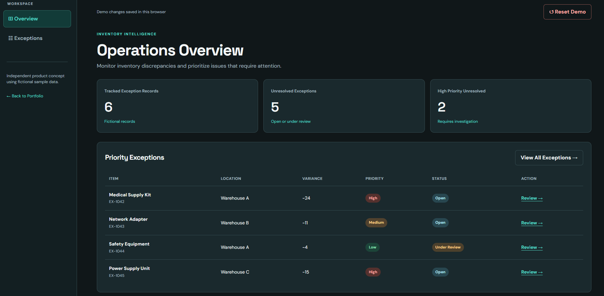
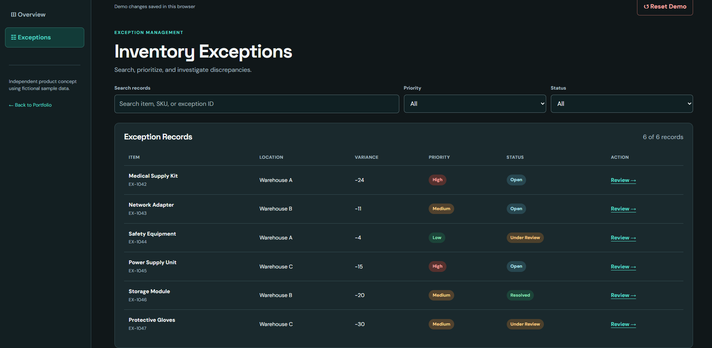
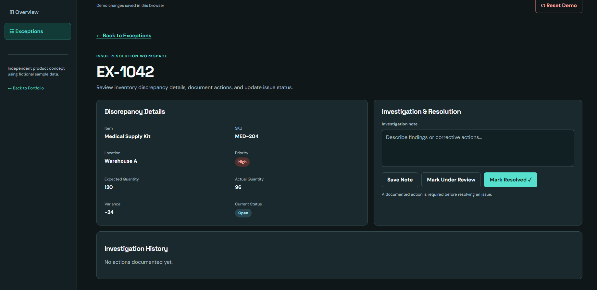

Inventory Specialists
Review expected and actual quantities, identify discrepancies, and document investigation findings.
01 / Digital Product Design Case Study
Making complex inventory workflows easier to understand, investigate, and manage through purposeful digital product design.

02 / The Challenge
Inventory personnel often need to compare records, investigate discrepancies, identify priorities, and document corrective actions.
These tasks can become difficult when operational information is fragmented or workflows require additional steps.
SupplySight explores a centralized digital experience for identifying, investigating, and resolving inventory exceptions through one connected workflow.
SupplySight is an independent concept informed by professional logistics experience. The problem statement is a design hypothesis, not the result of formal user research.
03 / User Context
The proposed application considers three groups who may regularly work with inventory information.
Review expected and actual quantities, identify discrepancies, and document investigation findings.
Monitor operational issues, prioritize requests, and coordinate corrective actions.
Evaluate inventory information and monitor the progression of unresolved exceptions.
Proposed user groups based on the product concept. No external user interviews were conducted.
04 / Product Objectives
Present unresolved and high-priority discrepancies in a centralized overview.
Help users find relevant inventory records, review details, and identify discrepancies.
Provide a structured workspace for documenting investigation notes and updating issue statuses.
05 / Interface Design
SupplySight separates the experience into focused views for monitoring, investigating, and resolving inventory exceptions.
The overview presents key exception counts and priority records so users can quickly identify issues that require attention.
Users can search inventory records, filter by priority and status, and open a specific discrepancy for review.

The resolution workspace places discrepancy details alongside investigation notes and action controls, allowing users to complete the workflow within one screen.

06 / User Flow
The main product journey follows a single inventory exception from identification through documentation and resolution.
Identify an unresolved or high-priority exception.
Search and filter the available records.
Compare expected and actual inventory quantities and review the issue status.
Record findings or corrective actions.
Resolve the issue and confirm updated information in the dashboard.
07 / Design Decisions
The dashboard presents unresolved and high-priority counts before displaying detailed records.
Rationale: Help users identify actionable information at a glance.
The interface separates overview, record management, and detailed investigation into focused views.
Rationale: Reduce competing information during each stage of the workflow.
Priority and resolution states use visible text labels supported by color.
Rationale: Improve the ability to distinguish status without relying on color alone.
An investigation note is required before an unresolved exception can be marked Resolved.
Rationale: Encourage a structured, traceable resolution workflow within the prototype.
08 / Design Iteration
During functional evaluation of Version 1, I found that investigation notes disappeared after refreshing the browser.
Version 2 addresses this problem through browser-based storage and adds a Reset Demo control to restore the original sample records.
Preserving user-entered information reduces unexpected loss of work. Providing a reset option gives reviewers control over the demonstration environment.
09 / Verified Results
The following behaviors were verified through self-conducted functional testing.
A saved investigation note remained available after the browser refreshed.
Exception EX-1042 remained Resolved after refreshing the browser.
The reset feature restored the original fictional inventory records.
These results reflect self-conducted functional testing, not independent usability testing with external participants. No measured efficiency gains are claimed.
10 / Accessibility
SupplySight includes semantic interface structure, labeled controls, visible focus indicators, text-based status indicators, and responsive layouts.
These implementation choices support clearer interactions and provide a foundation for further accessibility evaluation.
A comprehensive WCAG 2.2 audit and assistive technology evaluation have not yet been completed.
11 / Product Delivery
SupplySight was developed using HTML5, CSS3, and JavaScript, with connected interface screens, filtering, record details, investigation notes, status updates, browser persistence, and reset functionality.
SupplySight is an independent concept using fictional sample data. It is not connected to a live enterprise database, and browser storage does not synchronize between devices.
12 / Reflection
Implementing the initial interface was only one part of the design process. Evaluating it revealed the importance of preserving information and providing predictable application behavior.
Future work could include more extensive accessibility evaluation, external user research, additional workflow feedback, and expanded investigation history.
Explore the Experience
Explore the interactive product, investigate a sample discrepancy, document an action, and update its status.